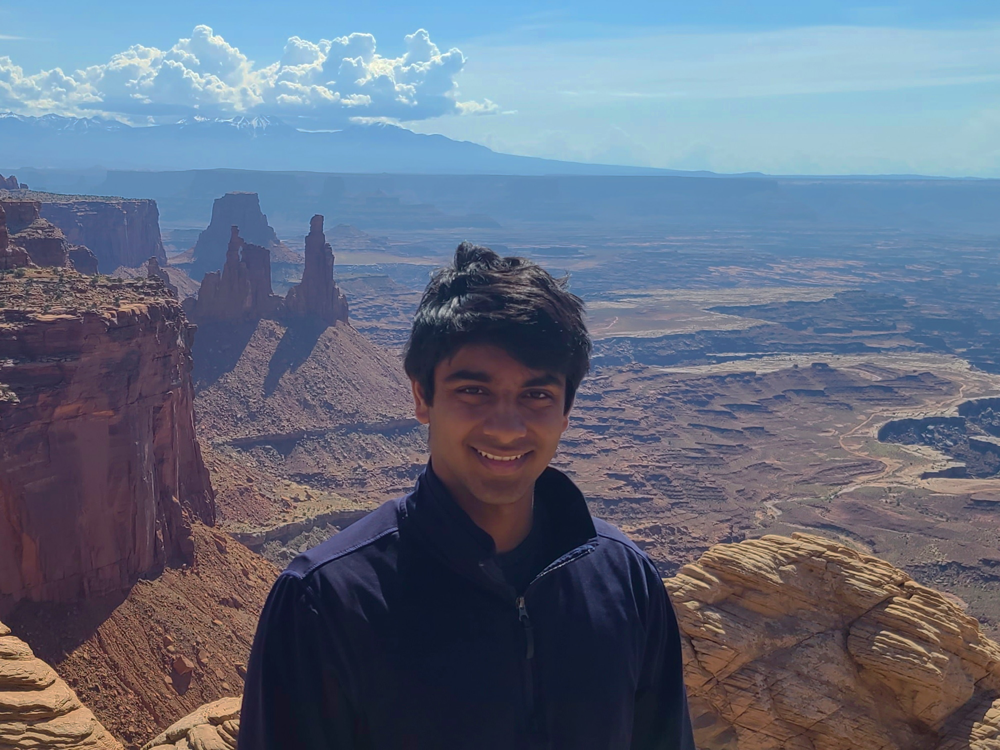

I'm an undergraduate at USC studying math and computer science. I am extremely fortunate to be advised by Prof. Vatsal Sharan and very lucky to also collaborate with Prof. Moïse Blanchard. Right now we're thinking about memory-sample lower bounds for optimization and numerical methods. I'm broadly interested in all computational and statistical aspects of learning theory and relevant mathematics.
Please do not hesitate to reach out if you're also interested in optimization, learning, or information theory! I'd love to learn from you and share what I have. I'm also applying for PhD programs this cycle!